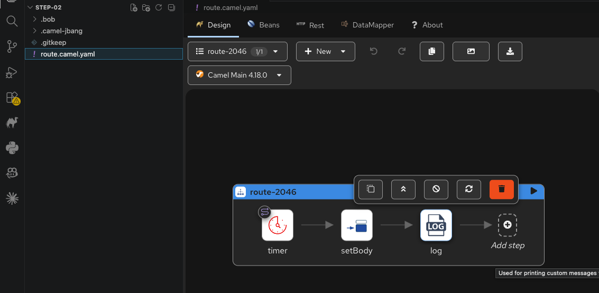

In this step, you'll create your first Apache Camel route. But first, let's understand the two building blocks that everything in Camel is built on: routes and components.
A route is the core building block of Apache Camel. It describes the path a message follows: where it comes from, what happens to it, and where it ends up. Every route starts with a single source (the from) and then applies a series of processing steps. Those steps can transform the message, filter it, route it to different destinations, or call external services.
Camel supports multiple DSLs to define routes. Here's the same route structure in three of them:
- route:
id: my-route
from:
uri: timer:hello
parameters:
period: 5000
steps:
- setBody:
constant: "Hello!"
- log:
message: "$\{body}"from("timer:hello?period=5000")
.routeId("my-route")
.setBody(constant("Hello!"))
.log("$\{body}");<route id="my-route">
<from uri="timer:hello?period=5000"/>
<setBody>
<constant>Hello!</constant>
</setBody>
<log message="$\{body}"/>
</route>Note
This step and all the following ones use the YAML DSL. Kaoto only supports YAML, so writing routes in this format lets you visualize and edit them in the Kaoto editor.
Regardless of the DSL, the structure is the same. The id gives the route a name for logging and management. The from block defines where messages come from. The steps form a pipeline: each one processes the message and passes it to the next. You can transform the message body, set headers, call an external service with to, or apply an Enterprise Integration Pattern like filtering or splitting.
Components are Camel's connectors to the outside world. Each one knows how to talk to a specific technology: a file system, an HTTP API, a message broker, a database, a timer, or an LLM. When you write timer:hello or kafka:myTopic in a route URI, the part before the colon is the component name. The part after is the endpoint name that the component uses to configure itself.
Camel ships with over 300 components. You don't need to memorize them. That's what the Camel MCP Server is for. In Step 01 you already explored the catalog. Now you'll put a component to work.
A component can play two roles in a route. When it sits in the from block, it acts as a consumer: it receives or generates messages that start the route. A timer fires on a schedule. A file component watches a directory for new files. A Kafka consumer listens for messages on a topic. The consumer is always the entry point of the route.
When a component appears in a to step, it acts as a producer: it sends the message somewhere. Writing to a file, calling an HTTP API, publishing to a message broker. The producer is the outbound side.
Some components can do both. Kafka, for example, can consume messages (in from) or produce messages (in to). Others only work one way. The timer component you're about to use is a consumer only. It generates events on a schedule but doesn't receive anything.
With those concepts in mind, let's build a route that uses the timer component to generate a message every 5 seconds, then logs it. Instead of writing YAML by hand, you'll ask your AI assistant to generate it using the Camel MCP Server.
Navigate to the step directory:
Start your AI coding assistant from this directory (Claude Code, Bob Shell, or whichever tool you configured). Then ask it to create a route file:
The assistant uses the Camel catalog to look up the timer component and generates the route file. Notice how the structure matches what you learned above: a from with a component URI, followed by processing steps. Your route.camel.yaml should look like this:
- route:
id: hello-camel
from:
uri: timer:hello
parameters:
period: 5000
steps:
- setBody:
constant: "Hello from Apache Camel!"
- log:
message: "$\{body}"Tip
Try changing the prompt and ask the assistant to generate the same route in Java DSL instead. Compare the result with the YAML version above.
Open a terminal and run:
You should see "Hello from Apache Camel!" printed every 5 seconds. Press Ctrl+C to stop.
Note
The * wildcard tells Camel CLI to load all files in the directory: routes, properties, and configuration files.
Open the step directory in VS Code:
Open the route.camel.yaml file. Kaoto renders the visual editor right away. You should see your route as a flow of connected steps:

Note
The Kaoto VS Code plugin automatically detects every file ending with .camel.yaml in the opened folder. When you click on one, it renders the route in the Kaoto visual editor.
You can also run the route directly from VS Code. Click the Kaoto button (the Camel logo) and it starts the route for you. Here's what the full workflow looks like, from opening the file to running it:
This visual editor gets really useful as routes grow more complex. You can edit routes visually too: add components, configure parameters, and connect steps by drag-and-drop. The YAML file updates automatically.
Take a few minutes to play with the editor. Try adding a new step, changing the timer period, or modifying the log message. When you're ready, head to the next step where you'll connect your route to a Large Language Model.